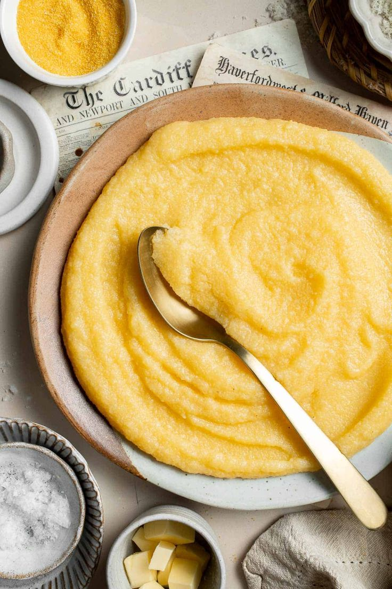

Polenta
A Polenta é um prato típico da culinária leste brasileira, especialmente influenciado pela imigração italiana. Feita de fubá de milho, pode ser servida cremosa ou firme, acompanhando molhos ou carnes.

Ingredientes
Serve 4 porções
- 1 xícara de fubá de milho
- 4 xícaras de água
- 1 colher de chá de sal
- 1 colher de sopa de manteiga
- Queijo ralado a gosto (opcional)
Modo de Preparo
Tempo estimado: 25 minutos
- Em uma panela, leve a água ao fogo médio com o sal.
- Quando ferver, despeje o fubá em chuva, mexendo sempre para não formar grumos.
- Cozinhe por cerca de 15 a 20 minutos até engrossar, adicionando a manteiga.
- Se desejar, finalize com queijo ralado e sirva cremosa ou despeje em forma para esfriar e cortar em fatias.
- A polenta firme pode ser grelhada ou frita antes de servir.
Dica do Chef: Mexa constantemente para evitar grumos. Para um sabor extra, cozinhe a polenta em caldo de legumes ou de carne ao invés de água.